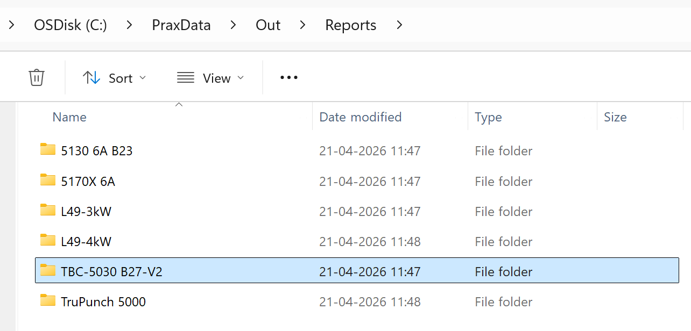

Part panel
ส่วนนี้อธิบายการดำเนินการที่เกี่ยวข้องกับชิ้นงาน เช่น นำเข้าอีกครั้ง…, กำหนดเครื่องมือใหม่…, เปลี่ยนชื่อ…, ส่งออกเอาต์พุต ฯลฯ ที่ใช้ในการจัดการอินสแตนซ์ชิ้นงาน

|
|


นำเข้าอีกครั้ง…
-
คลิกขวาที่ชิ้นงานใดก็ได้และคลิก นำเข้าอีกครั้ง…

-
อินสแตนซ์ทูลลิงของชิ้นงานที่เลือกทั้งหมดในทุกเครื่องจักรจะถูกล้าง รวมถึง อินสแตนซ์ที่สร้างทูลลิงอัตโนมัติและด้วยตนเอง
-
ไฟล์เอาต์พุตที่มีอยู่ (CAD, Bend และ Cut) จะถูกลบ
-
ชิ้นงานจะถูกนำเข้าใหม่ และการตรวจสอบ CAD และทูลลิงใหม่จะถูกนำมาใช้สำหรับ เครื่องจักรทั้งหมด
-
ไฟล์เอาต์พุตใหม่จะถูกสร้างขึ้นตามผลลัพธ์ทูลลิงที่อัปเดต
กำหนดเครื่องมือใหม่…
-
คลิกขวาที่ชิ้นงานใดก็ได้และคลิก กำหนดเครื่องมือใหม่…

-
เครื่องจักรทั้งหมดจะถูกเลือกโดยค่าเริ่มต้นและจัดกลุ่มเป็น Laser, Punch, Panel และ Press brake
-
คลิก ตกลง เพื่อดำเนินการต่อ สิ่งนี้จะลบทั้งอินสแตนซ์ที่สร้างทูลลิงอัตโนมัติและด้วยตนเอง สำหรับเครื่องจักรที่เลือก และลบไฟล์เอาต์พุตที่เกี่ยวข้อง
-
เมื่อเลือกช่องทำเครื่องหมาย คงเอาต์พุตที่มีอยู่ เฉพาะชิ้นงานที่มีเอาต์พุตถูกลบไปก่อนหน้านี้จะถูกสร้างทูลลิงใหม่ เอาต์พุตอื่นๆ ยังคงไม่ถูกแตะต้อง หากไม่เลือก ไฟล์เอาต์พุตทั้งหมดสำหรับเครื่องจักรที่เลือก จะถูกลบและสร้างขึ้นใหม่ระหว่างการสร้างทูลลิงใหม่
|
เปลี่ยนชื่อ…
ส่วนนี้อธิบายวิธีการเปลี่ยนชื่อชิ้นงานหนึ่งชิ้นหรือหลายชิ้นใน TruSmartCAM
-
คลิกขวาที่ชิ้นงานและคลิก เปลี่ยนชื่อ…

-
กล่องโต้ตอบยืนยันการเปลี่ยนชื่อจะปรากฏขึ้นแสดงชื่อชิ้นงานปัจจุบัน
-
ป้อนชื่อใหม่และคลิกไอคอนเครื่องหมายถูก ✓ เพื่อยืนยัน หรือคลิก ไอคอนกากบาท ✗ เพื่อยกเลิกการดำเนินการเปลี่ยนชื่อ

-
เพื่อเปลี่ยนชื่อหลายชิ้นงาน ให้เลือกชิ้นงานที่ต้องการทั้งหมด จากนั้นคลิกขวา ที่ชิ้นงานใดชิ้นหนึ่งและคลิก เปลี่ยนชื่อ…
-
กล่องโต้ตอบยืนยันจะปรากฏขึ้นพร้อมจำนวนชิ้นงานที่เลือกทั้งหมด
-
สำหรับแต่ละชิ้นงาน ให้ป้อนชื่อใหม่และคลิกไอคอนเครื่องหมายถูก ✓ เพื่อ ยืนยันทีละชิ้น
-
หากมีชิ้นงานใดถูกเลือกโดยไม่ตั้งใจ ให้คลิกไอคอนกากบาท ✗ เพื่อยกเลิก หรือคุณสามารถคลิกขวาที่ชิ้นงานและคลิก ยกเลิกการเปลี่ยนชื่อ เพื่อข้ามการเปลี่ยนชื่อ
ส่งออกเอาต์พุต
ตัวเลือกนี้จะส่งออกเอาต์พุตชิ้นงานไปยังปลายทางที่กำหนดค่าใน การตั้งค่าโรงงาน (ดูที่ Bend Settings และ Cut Settings)
ตำแหน่งเอาต์พุตถูกกำหนดแยกสำหรับ Bend, Fold และ Cut ใน การตั้งค่าเอาต์พุตที่เกี่ยวข้อง ทูลลิงทั้งหมดที่เชื่อมโยงกับการดัด การพับ และการตัดจะถูกส่งออกสำหรับชิ้นงานทั้งหมด

ตามที่แสดงด้านล่าง ไฟล์ที่ส่งออกจะถูกบันทึกในโฟลเดอร์ที่ระบุ
(ตัวอย่างเช่น C:\PraxData\Out\Reports)

| ไฟล์ที่ส่งออกขึ้นอยู่กับประเภทของการดำเนินการ สำหรับการดำเนินการ Bend และ Fold จะสร้างไฟล์ NC และรายงาน สำหรับการดำเนินการ Cut และ Punch จะส่งออกเฉพาะไฟล์ชิ้นงานเท่านั้น |
กำหนดวัสดุของชิ้นงาน
ชิ้นงานที่มีสถานะ ยังไม่ได้กำหนดวัสดุ จำเป็นต้อง ได้รับการอัปเดตก่อนการประมวลผลต่อไป ขั้นตอนด้านล่างอธิบายวิธีการกำหนด วัสดุ
-
คลิกขวาที่ชิ้นงานที่แสดงสถานะ ยังไม่ได้กำหนดวัสดุ และเลือก กำหนดวัสดุ

-
หน้าต่าง กำหนดวัสดุ จะเปิดขึ้น

-
กล่องโต้ตอบมีสี่ส่วน:
-
คำแนะนำ - แนะนำวัตถุดิบโดยอัตโนมัติ ตามความหนาของชิ้นงานที่นำเข้า
-
วัสดุทั้งหมด - แสดงรายการประเภทวัสดุทั้งหมดที่กำหนดใน TruSmartCAM
-
วัตถุดิบทั้งหมด - แสดงวัตถุดิบทั้งหมดที่ มีอยู่ในระบบ
-
วัตถุดิบที่ใช้ - แสดง วัตถุดิบที่ใช้ล่าสุดเพื่อการเข้าถึงอย่างรวดเร็ว
-
-
คุณสามารถใช้ฟิลด์ ค้นหา… (Ctrl+F) ที่ด้านบนเพื่อค้นหาอย่างรวดเร็ว วัสดุ ตัวอย่างเช่น พิมพ์ "steel" เพื่อแสดงวัสดุที่ตรงกันทั้งหมดใน สามส่วน
-
จากรายการที่กรองแล้ว ให้เลือกวัสดุที่ต้องการ (เช่น Steel-25) จาก รายการ Raw-Material
-
วัสดุที่เลือกจะถูกกำหนดให้กับชิ้นงาน
ทิศทางการรีด
ทิศทางการรีด หมายถึงทิศทางของ เส้นใยในชิ้นงาน ซึ่งอาจส่งผลต่อวิธีที่ชิ้นงานถูกตัดและประมวลผล ตัวเลือกนี้ช่วยให้คุณสามารถระบุ ทิศทางการรีด สำหรับชิ้นงานใน Part Library ตามทิศทางที่ เลือก ชิ้นงานจะถูกวางในการวางแนวที่ถูกต้องสำหรับการตัดบน เครื่องจักรที่มีอยู่
-
คลิกขวาที่ไทล์ชิ้นงานใดๆ ใน Part Library หรือหน้าต่าง Job
-
เลือกทิศทางการรีดที่ต้องการ:
-
ไม่มี
-
แนวนอน
-
แนวตั้ง

-
-
ชิ้นงานจะได้รับการสร้างทูลลิงใหม่โดยอัตโนมัติสำหรับเครื่องจักรตัดที่มีอยู่ทั้งหมดตาม ทิศทางการรีดที่เลือก
-
ไทล์ชิ้นงานจะแสดงทิศทางการรีดที่เลือกตามที่แสดงด้านล่าง: